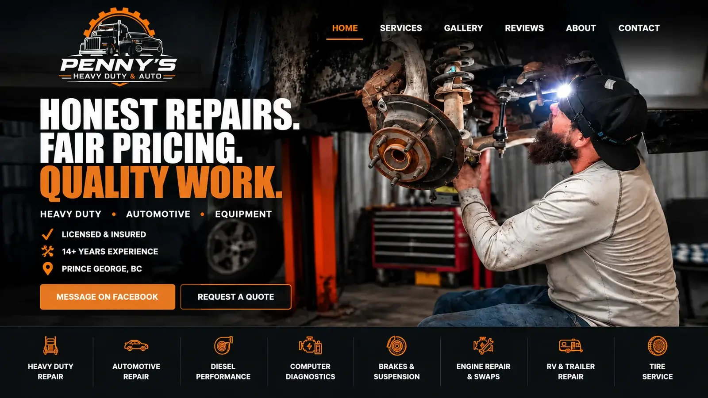

Penny's Heavy Duty & Auto
Website Design & Front-End Development
A responsive business website designed to showcase automotive and heavy-duty repair services through a clean, professional, and easy-to-navigate experience.

Project Overview.
Penny's Heavy Duty & Auto is an automotive and heavy-duty repair business. This project focused on creating a professional online presence that clearly represents the business and its services.
The website features straightforward navigation, organized content, and responsive layouts to help customers find information easily on any device.
My Role.
I worked on the design and front-end development of the website, focusing on creating a clean layout that reflects the business and makes information easy to access.
Using HTML, CSS, and JavaScript, I built the page structure, styled the interface, and developed responsive layouts for desktop and mobile visitors.
What I Learned.
This project helped me strengthen my HTML, CSS, and JavaScript skills while gaining more experience building a website for a real-world business.
I learned how important it is to organize content clearly, create consistent styling, and consider how visitors use a website across different screen sizes.
Explore More Projects.
Take a look at the other websites and applications I've worked on.